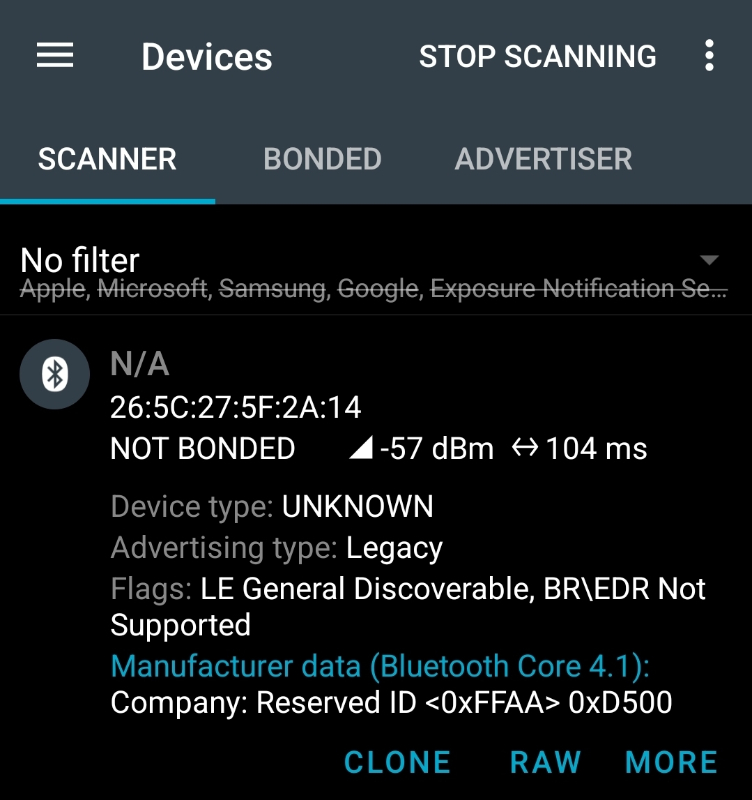

Résumé du Bluetooth Low Energy (BLE)
Le Bluetooth Low Energy (BLE) est une technologie de communication radio sans fil conçue pour permettre l’échange de petites quantités de données tout en consommant très peu d’énergie. Contrairement au Bluetooth classique, qui est optimisé pour des flux continus de données (audio, par exemple), le BLE est destiné aux appareils fonctionnant sur batterie pendant plusieurs mois ou plusieurs années, comme les capteurs, balances connectées, montres ou dispositifs médicaux.
Le fonctionnement du BLE repose sur deux mécanismes principaux :
- l’advertising (publicité) ;
- les connexions et les échanges de données via le protocole GATT.
Advertising
L’advertising correspond à l’émission périodique de paquets de données BLE appelés advertising packets.
Un appareil BLE qui diffuse ces paquets est appelé un advertiser.
Ces paquets permettent :
- d’annoncer la présence d’un appareil à proximité ;
- de transmettre certaines informations ;
- d’indiquer si une connexion est autorisée ou non.
Les appareils situés à proximité effectuent un scan afin de détecter et de recevoir ces paquets.
L’un des principaux avantages de l’advertising est qu’il permet de transmettre des informations sans nécessairement établir une connexion BLE.
Exemple
Une balance connectée peut diffuser périodiquement son poids dans ses données d’advertising. Un smartphone ou une passerelle BLE peut alors récupérer cette information simplement en effectuant un scan.
Le smartphone lit les données reçues puis attend le prochain paquet d’advertising pour obtenir une nouvelle mesure.
Advertising connectable et non connectable
Il existe plusieurs types d’advertising selon que l’appareil autorise ou non l’établissement d’une connexion BLE.
Advertising connectable
Dans ce mode, l’appareil diffuse des paquets d’advertising et accepte les demandes de connexion provenant d’un appareil central, comme un smartphone.
Ce mode est généralement utilisé lorsqu’un échange de données via des services GATT est nécessaire.
Exemple : une montre connectée ou un capteur dont les mesures sont lues via une connexion BLE.
Advertising non connectable
Dans ce mode, l’appareil diffuse uniquement ses données d’advertising et refuse toute tentative de connexion.
Les informations doivent donc être directement incluses dans le paquet d’advertising.
Exemples :
- balise Beacon ;
- capteur de température transmettant périodiquement une mesure ;
- balance diffusant uniquement son poids.
L’absence de connexion réduit le temps d’activation de la radio Bluetooth, ce qui permet généralement de diminuer la consommation d’énergie et d’augmenter l’autonomie du système.
Connexion BLE
Lorsque davantage de données doivent être échangées, un appareil peut établir une connexion.
On distingue alors :
- le Peripheral (balance, capteur, etc.) ;
- le Central (smartphone, ordinateur, passerelle, etc.).
La séquence devient :
Une fois la connexion établie, les données ne transitent plus par les paquets d’advertising mais via le protocole GATT.
Le protocole GATT
GATT (Generic Attribute Profile) est la couche du BLE qui définit comment les données sont organisées et échangées après l’établissement d’une connexion.
GATT repose sur une structure hiérarchique :
- Service
- Characteristic 1
- Characteristic 2
- Characteristic 3
Les services
Un service regroupe des fonctionnalités similaires.
Quelques exemples :
- Battery Service ;
- Heart Rate Service ;
- Device Information Service.
On peut également créer des services personnalisés.
Dans le cas d’une balance :
Weight Service
Les caractéristiques (Characteristics)
Les caractéristiques contiennent les données.
- Weight Service
- Weight Characteristic
- Battery Characteristic
Une caractéristique peut :
- être lue (Read) ;
- être écrite (Write) ;
- notifier automatiquement une nouvelle valeur (Notify).
Exemple de communication GATT
- La balance fait de l’advertising.
- Le smartphone la détecte.
- Le smartphone se connecte.
- Le smartphone découvre les services GATT.
- Il lit la caractéristique contenant le poids.
- La connexion est fermée.
Pourquoi ne pas utiliser GATT peut économiser de l’énergie ?
Dans une application où il faut simplement envoyer une valeur de poids puis retourner en veille, le protocole GATT apporte peu d’avantages.
Pour utiliser GATT, il faut :
- diffuser de l’advertising ;
- attendre une connexion ;
- établir la connexion ;
- découvrir les services ;
- échanger les données ;
- maintenir les événements de connexion ;
- se déconnecter.
Toutes ces opérations nécessitent l’activation de la radio pendant une durée plus importante quiconsomme de l’énergie.
Dans le cas d’un capteur de pesée alimenté par batterie qui doit simplement transmettre une valeur puis retourner en veille, l’utilisation d’un advertising non connectable est généralement la solution la plus économe en énergie. Le smartphone ou le récepteur n’a qu’à scanner périodiquement les paquets BLE pour récupérer le poids. Il n’est alors plus nécessaire de gérer une connexion, des services GATT ou des caractéristiques, ce qui réduit considérablement le temps pendant lequel la radio BLE reste active et augmente l’autonomie du système.
Code pour de l'advertising non connectable
Ce code utilise alors le BLE en mode advertising non connectable pour diffuser le poids mesuré à tous les appareils en mode serveur BLE en écoute à proximité.
/* Bibliothèques Zephyr */
#include <zephyr/kernel.h>
#include <zephyr/sys/printk.h>
/* Bibliothèques Bluetooth */
#include <zephyr/bluetooth/bluetooth.h>
#include <zephyr/bluetooth/hci.h>
/* Structure envoyée dans l'advertising */
struct adv_weight {
uint16_t company_id;
uint16_t weight;
} __packed;
/* Données initiales */
static struct adv_weight adv_weight_data = {
.company_id = 0xFFAA,
.weight = 0x6769
};
/* Callback appelée après l'initialisation Bluetooth */
static void bt_ready(int err)
{
/* Vérification de l'initialisation */
if (err) {
printk("Bluetooth init failed (err %d)\n", err);
return;
}
printk("Bluetooth initialized\n");
}
int main(void)
{
int err;
/* Poids mesuré en kg */
double weight = 2.13;
/* Conversion en entier (2 décimales) */
adv_weight_data.weight = (uint16_t)(weight * 100);
printk("Weight = %.2f kg\n", weight);
/* Démarrage de la pile Bluetooth */
err = bt_enable(bt_ready);
/* Vérification du démarrage */
if (err) {
printk("Bluetooth init failed (err %d)\n", err);
return 0;
}
/* Attente de stabilisation */
k_sleep(K_MSEC(500));
/* Données à diffuser */
struct bt_data ad[] = {
/* Flags BLE */
BT_DATA_BYTES(
BT_DATA_FLAGS,
BT_LE_AD_GENERAL |
BT_LE_AD_NO_BREDR
),
/* Données constructeur */
BT_DATA(
BT_DATA_MANUFACTURER_DATA,
&adv_weight_data,
sizeof(adv_weight_data)
),
};
/* Démarrage de l'advertising non connectable */
err = bt_le_adv_start(
BT_LE_ADV_NCONN,
ad,
ARRAY_SIZE(ad),
NULL,
0
);
/* Vérification du démarrage */
if (err) {
printk("Advertising failed (err %d)\n", err);
return 0;
}
printk("Advertising started\n");
/* Diffusion pendant 5 secondes */
k_sleep(K_SECONDS(5));
/* Arrêt de l'advertising */
bt_le_adv_stop();
printk("Advertising stopped\n");
/* Attente infinie */
while (1) {
k_sleep(K_FOREVER);
}
return 0;
}
CONFIG_BT=y
CONFIG_BT_PERIPHERAL=y
On observe sur la capture d'écran ci-dessous de l'application nRF Connect, l'ID de l'appareil ainsi que les données du poids transmis en hexadécimal 0xD500 = 213 (2.13kg) (le code hex est inversé sur l'application nRF Connect, donc si c'est marqué 0x6769, en réalité c'est 0x6967).
